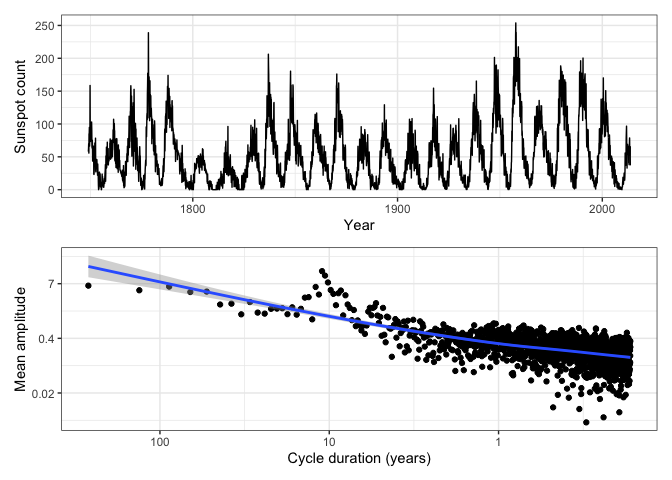

The goal of tidyfft is to make working with fft’s in R easier and more consistent. It follows the tidy philosophy by working with tabular data rather than lists, vectors, and so on.
Installation
You can install the development version of tidyfft from GitHub with:
# install.packages("pak")
pak::pak("thk686/tidyfft")Maintenance and Contributions
I intend to keep this package current and availabe on CRAN. If you would like to contribute of code or maintenance, please create an issue on github.
Example
Using tidy_fft with ggplot.
tidy_fft(sunspot.month, norm = TRUE) |>
to_rect(.keep = "all") |>
to_polr(.keep = "all") |>
print(n = 5) ->
ssm.fft
#> # A tibble: 3,177 × 6
#> .dim_1 fx re im mod arg
#> <dbl> <cpl> <dbl> <dbl> <dbl> <dbl>
#> 1 0 51.96+0.00i 52.0 0 52.0 0
#> 2 0.00378 4.37+4.99i 4.37 4.99 6.63 0.852
#> 3 0.00755 -0.86+5.08i -0.860 5.08 5.15 1.74
#> 4 0.0113 -2.65-5.70i -2.65 -5.70 6.29 -2.01
#> 5 0.0151 -4.64-0.59i -4.64 -0.586 4.68 -3.02
#> # ℹ 3,172 more rows
ggplot(fortify(sunspot.month)) +
geom_line(aes(x = Index, y = Data)) +
ylab("Sunspot count") +
xlab("Year") +
theme_bw() ->
p1
xlocs <- c(1, 0.1, 0.01)
xlabs <- c("1", "10", "100")
ssm.fft |>
dplyr::filter(.dim_1 > 0) |>
ggplot() +
geom_point(aes(x = .dim_1, y = mod)) +
geom_smooth(aes(x = .dim_1, y = mod)) +
scale_y_continuous(trans = "log", labels = function(y) signif(y, 1)) +
scale_x_continuous(trans = "log", breaks = xlocs, labels = xlabs) +
xlab("Cycle duration (years)") +
ylab("Mean amplitude") +
theme_bw() ->
p2
print(p1 / p2)